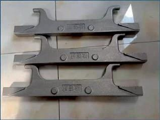
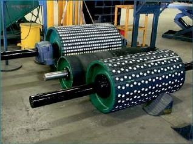
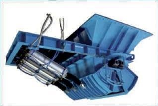

Sintering machines are subject to intense thermal cycling, severe abrasive wear, and heavy structural stresses during the iron-making process. Excellors designs and manufactures high-performance sintering plant equipment components, engineered to extend the operational lifespan of sinter bed assemblies while minimizing maintenance downtime.
Our Grate Bars & Grate Plates are produced using an advanced coated sand casting process. This guarantees a perfectly smooth surface finish, structural integrity with no internal pores or cracks, and high dimensional stability to prevent bending deformation during hot sinter bed operations.
We also supply high-strength Pulley Idlers (both cast and fabricated designs) that feature superior wear resistance and positive biting performance to ensure continuous material conveying. Additionally, our fabricated Sector Gates are engineered for reliable discharge control, supporting manual, hydraulic, or pneumatic operations.
Alloy Standards: Grate bars are cast using heat-resistant alloy steel grades that offer excellent oxidation and thermal shock resistance up to 1000°C.